You can see further maps examining the relationship between population density and Wikipedia article density here.
Such is the nature of the modern university that a sudden spark of inspiration can lead to a quick and radical dive into data that, once upon a time, would have taken supercomputers and manpower far beyond the reach of humanities scholars. When Jon Christensen proposed we explore the possibilities of mapping culture in urban areas, I immediately thought of Eric Fischer’s work mapping Twitter and Flickr users in an attempt to describe how we talk about certain things but photograph others. In a stroke of good timing, I’d recently seen Claudia Engel, academic technology specialist for Anthropology, demonstrate using the Drupal Feeds module to pull in geolocated articles from DBpedia, the database version of Wikipedia. I thought, why not map the places that had Wikipedia articles associated with them, to see what patterns emerged. The results of this excursion are presented below:

The world of Wikipedia, with brighter areas having a higher density of geolocated articles.
DBpedia is the ongoing attempt to transform Wikipedia into a semantically rich and queryable database of human knowledge. It stores much of the categorical information found in Wikipedia articles using RDF triples–simple links for every snippet of data, from the death date of a famous (and sometimes even real) person to the season number of every Simpsons episode, to the latitude and longitude of over half a million articles on a wide variety of subjects.
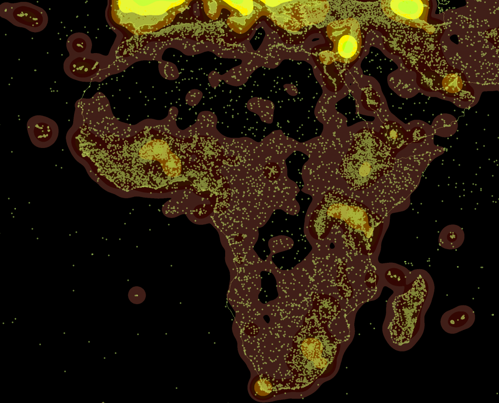
The individual points represented by each article are aggregated using a common spatial analytical technique known as kernel density to show sparse and dense regions.
Jon is the director of the Bill Lane Center for the American West, and he brought with him two undergraduate research assistants, Jenny Rempel & Judee Burr. I showed them how to perform simple spatial queries to get Wikipedia articles located in San Francisco and we discussed what this data may mean and the thorny issues that we may need to account for in its use.
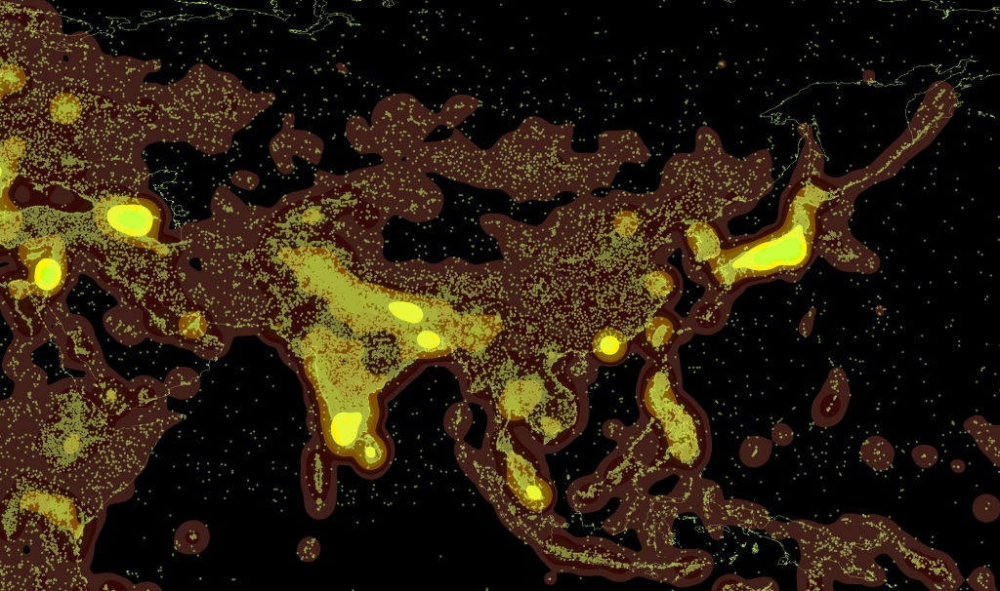
One of the problems of using Wikipedia as a proxy for anything is that it is subject to censorship by various states. Here we see that the Great Firewall of China, while impeding Wikipedia contributions, reduces but does not stop the creation of articles about Chinese subjects.
Naturally, I made a fool out of myself trying to show off my limited SPARQL skills. SPARQL is the query language used to access DBpedia, and while I consider myself quite adept at MySQL (and, as a result of recent forays into PostGIS, somewhat skilled with Postgres), SPARQL still seems like a bit of a Lovecraftian nightmare to me. There are no set fields in a data store like this–how could there be when you’re storing biographies alongside episodes of Battlestar Gallactica and land wars in Asia and, well, other stuff–and even worse there are a variety of ontologies at play (or at war, I suppose it’s a matter of perspective).
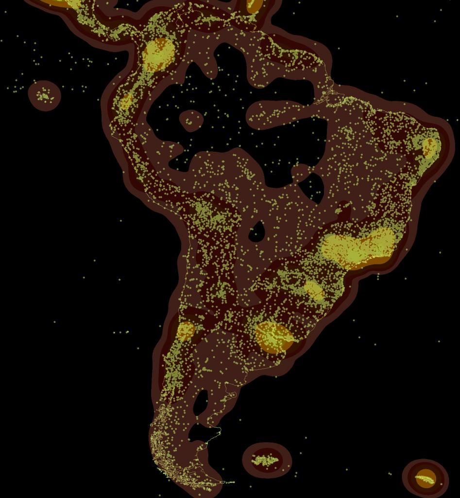
Among other issues, the geodata associated with articles is not in the same format, and so the maps presented here rely soley on the easier www.w3.org/2003/01/geo/wgs84_pos type geodata and need to be combined with any other significant sources of DBpedia geodata.
The first significant problem we ran into was trying to find particular types of articles, which required that we better understand the various ontologies and how they may categorize locations or structures differently. Are you looking for places or features or structures? What’s the difference? The post-modern data problems depend on your point of view and which categorization of data you’re using. Beyond that, while DBpedia offers more the possibility to write more nuanced spatial queries, such as finding non-geolocated articles that are designated as having happened at geolocated articles, we decided to perform this first run with the most readily available data.

While the United Kingdom is the most dense region from a global scale, on closer examination it would seem that there is a sort of Hadrian's Firewall as far as Wikipedia is concerned.
Rather than build individual queries with bounding boxes for each city, I decided that the best thing to do was to grab every article that has geodata (with some exceptions, as noted above) and get a lay of the land. The result was some 492,000 points of data, which we transformed into a shapefile and then ran kernel density on using ArcGIS at various scales. Below are the top ten most populous cities in the United States, each with their local density of articles and, in some occasions, an exploration of issues we came upon.
To put this in perspective, there are around 10 million Wikipedia articles in its various languages, so these maps are only 5% of Wikipedia and, upon more detailed examination, likely oversample along linguistic and community lines (a language map of Wikipedia would be almost as easy to produce using SPARQL to pull the language of the abstracts). Of course, those dealing with Twitter know that half a million data points is just five minutes of twitter or a month of a relatively popular hashtag, so big data, like the Peng Bird of Daoist lore, is really only big in comparison.
The blue-to-red maps were created by me, while the orange-to-green maps represent the same data using a different color ramp and were created by Jenny Rempel. Please keep in mind that these are drafts.
New York Metropolitan Area – 5677 Articles
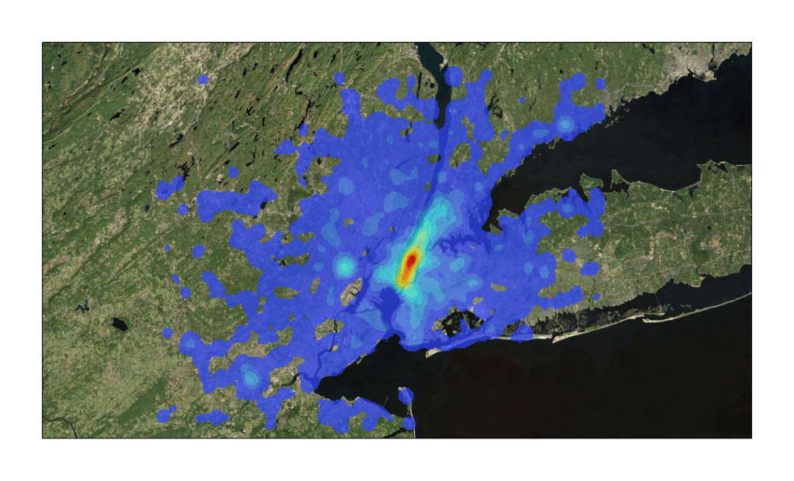
Manhattan – 2200 Articles
 Greater Los Angeles – 1539 Articles
Greater Los Angeles – 1539 Articles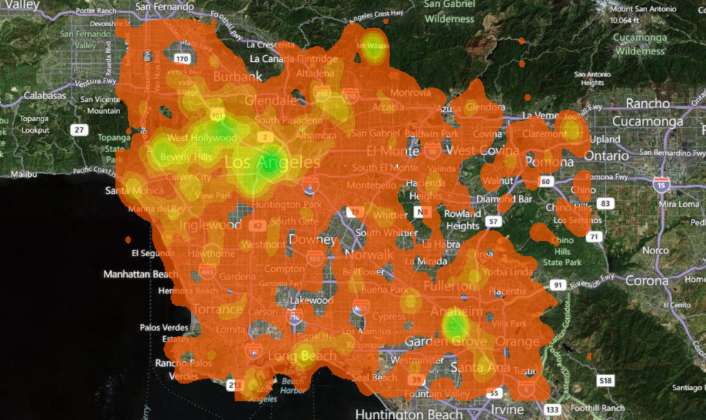

Chicago – 1933 Articles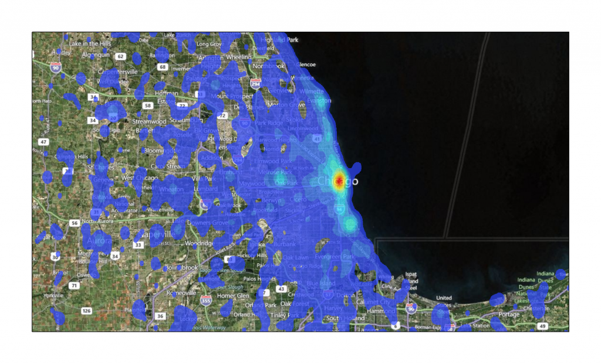
Houston – 414 Articles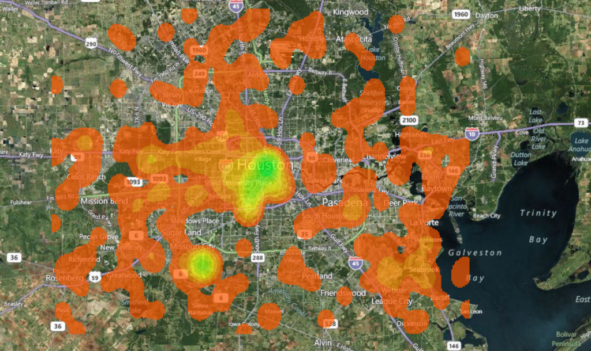
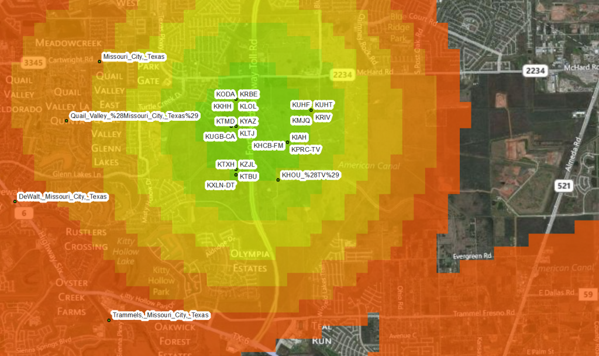
One factor affecting the use of this technique is the high sampling of centroids, whether city, county, state or nation.

One factor affecting the use of this technique is the high sampling of centroids, whether city, county, state or nation.
Philadelphia -1669 Articles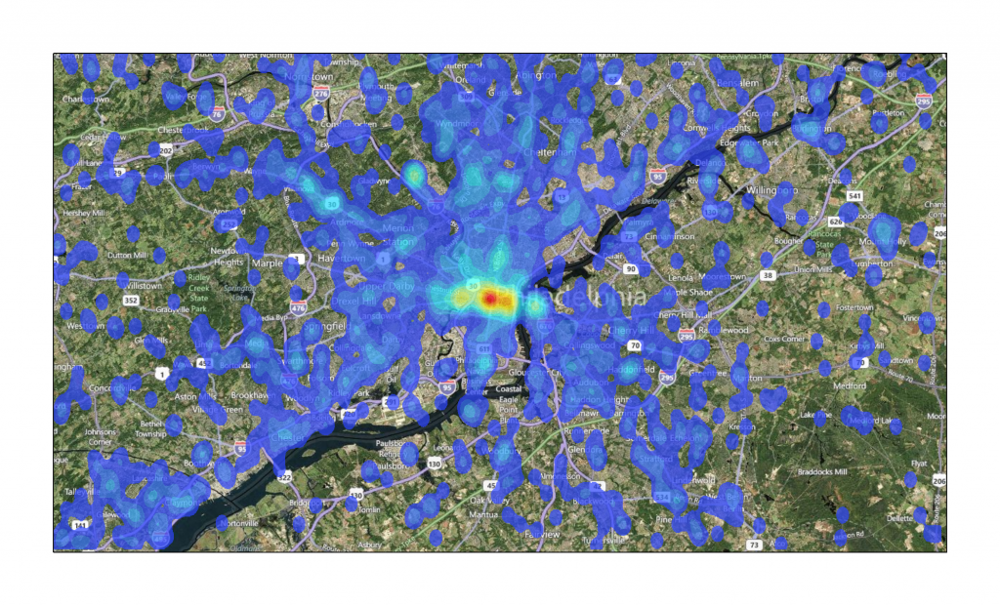
Phoenix -391 Articles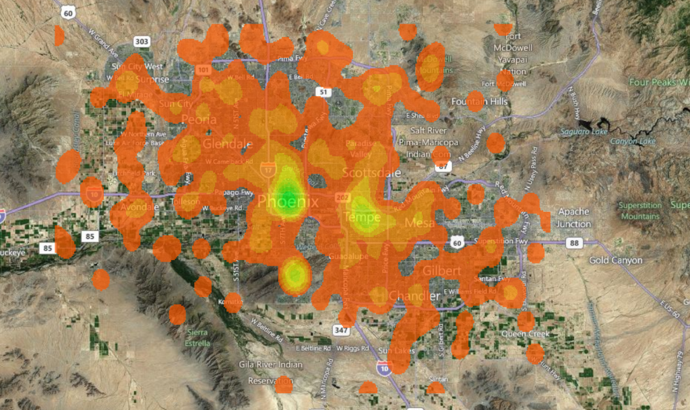
San Antonio -180 Articles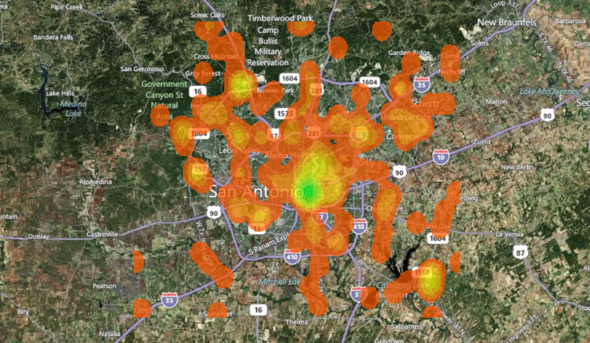
San Diego -502 Articles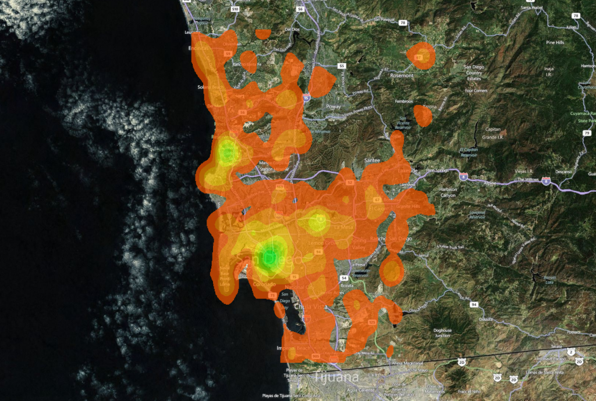
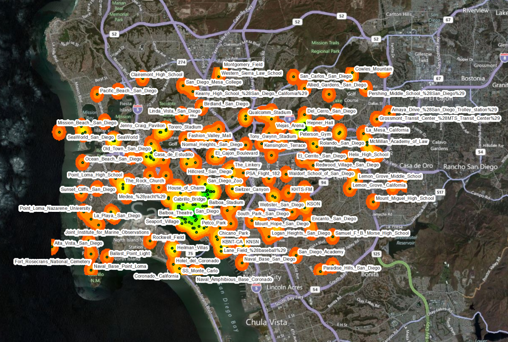
Dallas -634 Articles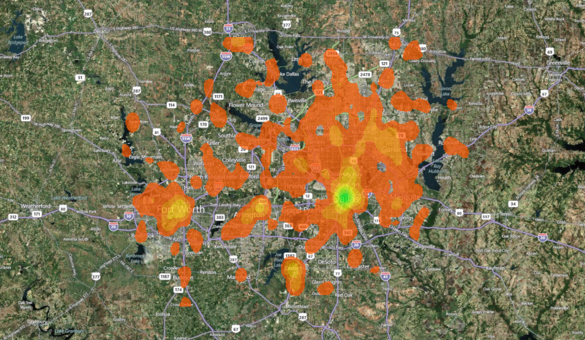
San Jose -544 Articles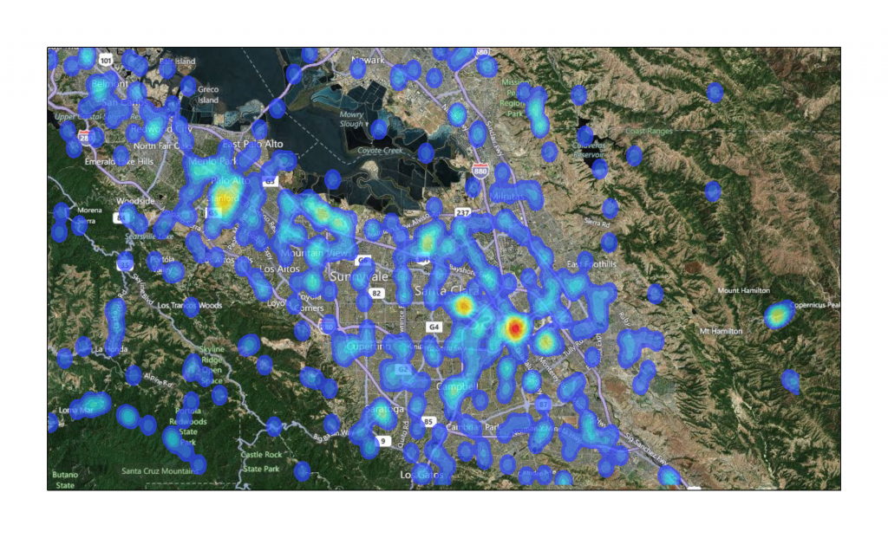
And as a special bonus, below you can find San Francisco and London. London, because it is, apparently, the navel of Wikipedia, and San Francisco, because that’s the benefit to nearby cities for having universities with strong digital humanities programs.